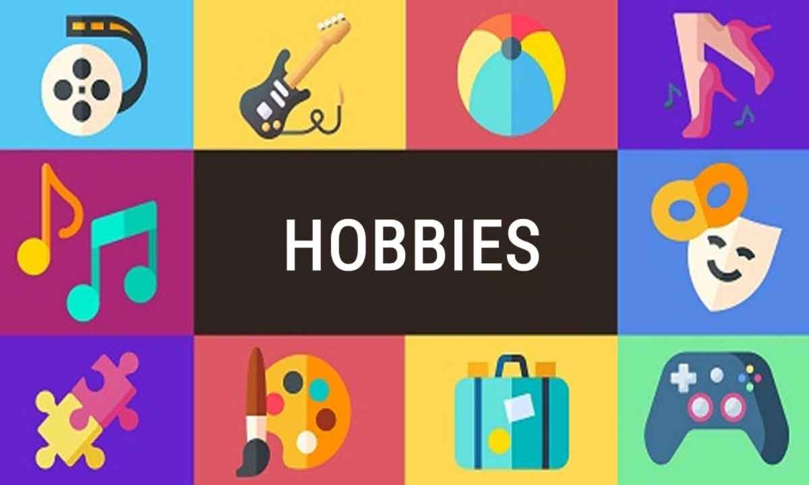
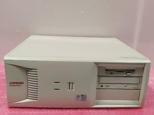
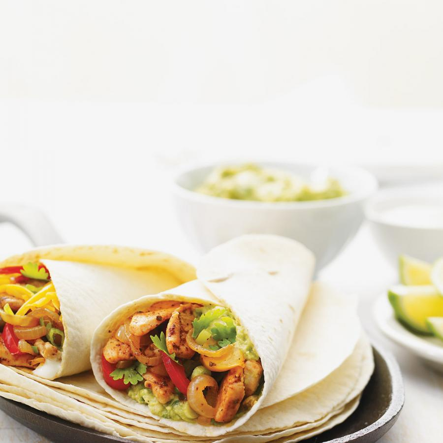
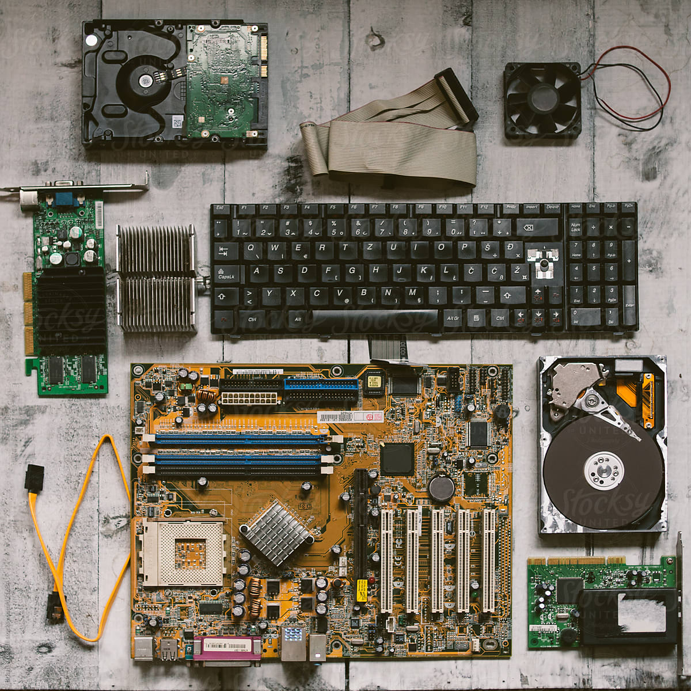
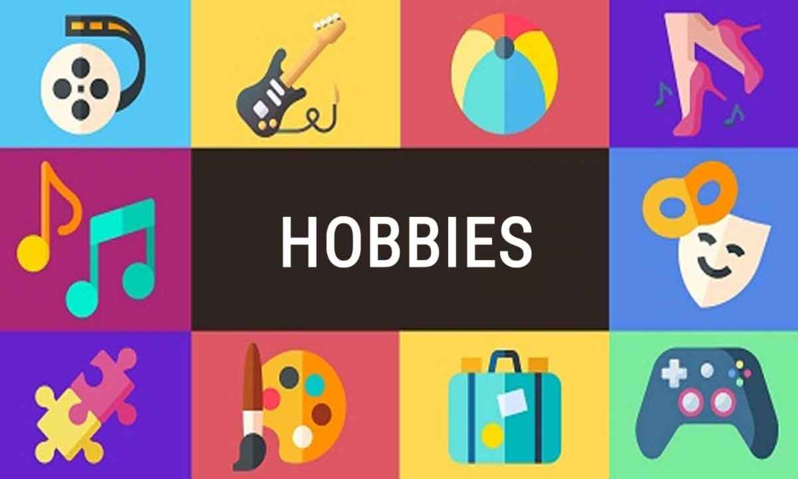
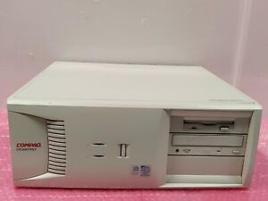
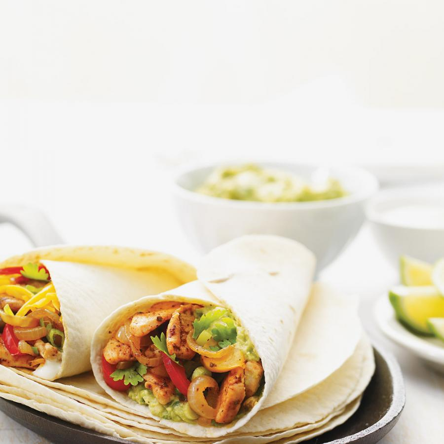

Other
I have a lot of hobbies.
Some of them include:
playing guitar, retrogaming, reading,
cooking, fixing computers and level designing.

I play guitar in Ringsend
Rock School. Mainly I
play rythm guitar, but
I can play base as well.
I started retrogaming
after I started watching
LGR, a retrogaming youtuber.
Now I have an old PC,
a number of games for it,
and I've bought a GBA on ebay.

I read a lot of books
in my life both in Russian
and English.
Cooking, became my
hobby, when I got a
mexican dish kit.
Now everybody in my
family want me to cook fajita.
:D


I started fixing computers
recently, when I got my old
computer. Now I am always out
for broken computery stuff.
My brother and I are
working on a game to
teach children Irish,
using Unreal Engine.
My brother asked me to
do levels for him
and I liked it.

Some of them include:
playing guitar, retrogaming, reading,
cooking, fixing computers and level designing. 
I play guitar in Ringsend
Rock School. Mainly I
play rythm guitar, but
I can play base as well.
after I started watching
LGR, a retrogaming youtuber.
Now I have an old PC,
a number of games for it,
and I've bought a GBA on ebay. 
in my life both in Russian
and English.
hobby, when I got a
mexican dish kit.
Now everybody in my
family want me to cook fajita.
:D 
recently, when I got my old
computer. Now I am always out
for broken computery stuff.
working on a game to
teach children Irish,
using Unreal Engine.
My brother asked me to
do levels for him
and I liked it.